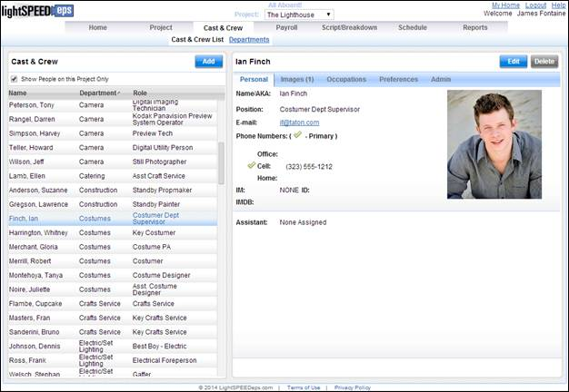

The Cast & Crew
screen displays the list of cast and crew as well as contact details,
headshots, occupations, and start form information for each person. Each person must have at least one occupation
in order to access the production.
The production contains a list of standard crew positions and departments. If you need to create a position or department not in the list you may do so. New positions may be created when you are adding the position to a crew member. New departments may be created via the Departments screen.
When you select Cast
& Crew List the Cast & Crew List appears in the left pane. Details for the person selected in the list appear
on the right.
Cast & Crew
Screen

The Cast & Crew List is the list of people working on or with the
production. The list displays each
person's name, department, and role.
If your production
contains multiple projects or episodes then you will see a checkbox above the Cast
& Crew List with the option "Show People on this Project
only". If the checkbox is selected,
only those people working on your current project will be visible. If the checkbox is unchecked, then all people
on the production will be visible.
Use the following steps to invite a cast or crew member to your production.
1. Select the Add button above the Cast & Crew List.
The Add New Person to Production popup window appears.
2. Enter the person's e-mail address to search for them in the Lightspeed directory.
If the person is found in the directory, then their first and last names will be displayed onscreen.
a. Select a production role for the person using the Department and Position dropdown menus.
If the person's position is a part of a specific unit (such as a 2nd Unit) then select the unit.
Note: If you don't see the occupation you need, you can create a custom occupation by selecting (Create New Role) for the person's Position.
b. If you want the person to be able to log into your production, check the Enable Production Access checkbox at the bottom of the screen.
c. Select Save.
The person is added and displayed in the right pane as Invited.
If the person is not found in the directory you may search again for a different e-mail address, or you may create an account for the person who was not found, which will allow you to invite them to your production. To create the person's account:
a. Select the New Account button.
b. Enter the person's first and last names.
c. Select a production role for the person using the Department and Position dropdown menus.
If the person's position is a part of a specific unit (such as a 2nd Unit) then select the unit.
Note: If you don't see the occupation you need, you can create a custom occupation by selecting (Create New Role) for the person's Position.
d. If you want the person to be able to log into your production, check the Enable Production Access checkbox at the bottom of the screen.
e. Select Save.
The person is added and displayed in the right pane as Invited.
3. Enter any other information for the new person such as address, phone number, or images.
4. If the person prefers to receive automatic notifications to their cell, e-mail, or both, make those selections under the Preferences mini-tab.
5. Select the Save button when you have completed entering the person's information.
An invitation e-mail is sent to the user. If the crew member loses their first invitation you may use the Re-Invite button to invite them again.
The right pane
displays the details for the selected person.
Select a cast or crew member by clicking on their record in the left
hand list.
The detail screen
contains several mini-tabs.
The Personal
mini-tab displays the person's occupation, phone number(s), and e-mail address,
and if the person has an Assistant.
Select this mini-tab to upload or view images of the person.
All of the person's occupations for the production and/or individual episodes are listed in a table under the Occupations mini-tab. A person may be assigned multiple occupations on the same project.
If you have the right to view employee Start Forms, the View Starts button is visible under the Occupations mini-tab. See the Start Forms section, below, for more information on this screen.
Select the Preferences mini-tab to view or change a person's notification and document subscription preferences.
The Admin mini-tab allows you to enable or disable a crew member's production access.
To edit a cast or
crew record select the Edit button
in the upper right corner of the screen.
The screen switches to edit mode.
While in edit mode, you can make changes to the person's information as
well as perform the following tasks:
1. Select the Personal mini-tab
2. Using the Select Assistant dropdown field, select the assistant from your crew list.
Note: If you are working on an episode within a production, the Select Assistant dropdown menu displays only those people with positions on the episode. If the assistant you need to add is not listed in the dropdown menu then first assign that assistant a role within the episode.
3. Select Save.
1.
Select
the Images mini-tab
2.
Select
the New Image button
The Add New Image popup
appears.
3.
Use the
screen controls to find an image and upload it to Lightspeed.
4.
Select Save.
1.
Select
the Occupations mini-tab
2.
Click
on the Create button in the upper
right corner of the Positions list
The Create Position popup
window appears.
a.
If your
production has multiple episodes, select a Project/Episode.
b.
If your
production has multiple units, select the unit.
c.
Select
a Department and Position.
d.
Click Save
3. Select Save.
1.
Select
the Occupations mini-tab
2.
Click
on the red x next to the position that you want to remove from the Contact.
3.
Select Save.
1. Select the Preferences mini-tab.
2. Check or uncheck the applicable options.
3. Select Save.
1.
Select
the Admin mini-tab.
2.
Uncheck
the Production Access Enabled
checkbox.
3.
Select Save.
If a person's
account is flagged as hidden, their phone numbers are hidden from view from all
users with the exception of the Director and the Casting department.
1.
Select
the Admin mini-tab.
2.
Check
the Hidden User checkbox.
3.
Select Save.
To delete a cast or
crew member, select the person from the left hand list and, once the person is
displayed on the right, click on the grey Delete
button in the upper right part of the screen.
The Delete Person from Production
popup window asks you to confirm the deletion.
Related Topics